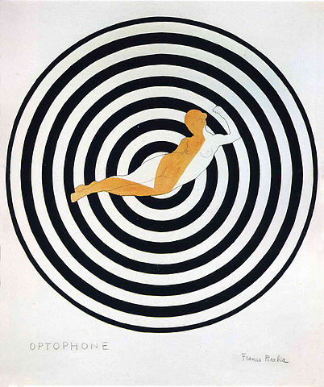

Schleifen
Loops are handy, if you want to run the same code over and over again,
each time with a different value.
(W3Schools)
Sigma-Schreibweise in der Mathematik
$\displaystyle{ 1 + 2 + 3 + 4 + 5 = \sum_{i = 1}^{5}i }$
Schleifen in JavaScript
Übung: Op-Art
Die Op-Art oder optische Kunst ist eine Stilrichtung der bildenden Kunst der 1960er Jahre,
die mit Hilfe präziser abstrakter Formmuster und geometrischer Farbfiguren beim Betrachter überraschende oder irritierende optische Effekte,
die Vorstellung von Bewegung, Flimmereffekte und optische Täuschungen erzeugt.
(Wikipedia)


Francis Picabia - Optophone I
Lösung
Spiraling four-sided tunnel